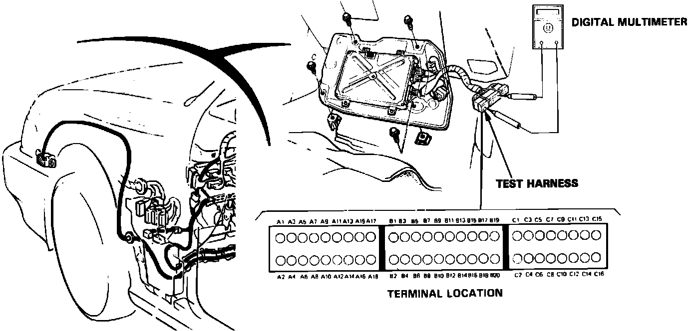

Pinout Values and Diagnostic Parameters
Fig. 29 PGM-FI Test Harness, SRS Wire Harness, And Terminal Location (Coupe):

If the inspection of any particular fault code requires the PGM-FI test harness, lift carpet in passenger footwell and connect the test harness as shown. If test harness is not available, carefully backprobe wires at ECU harness.